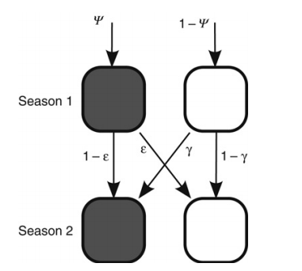
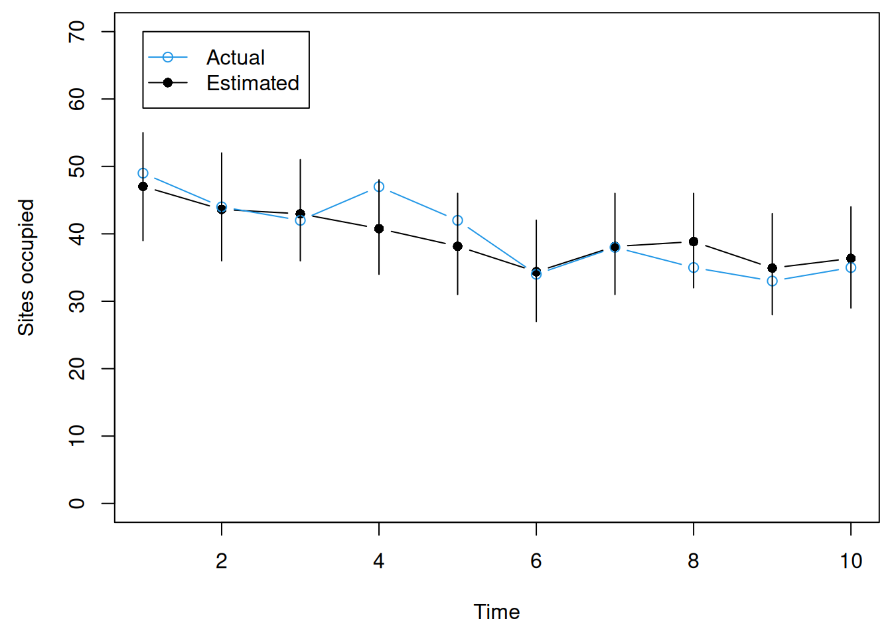
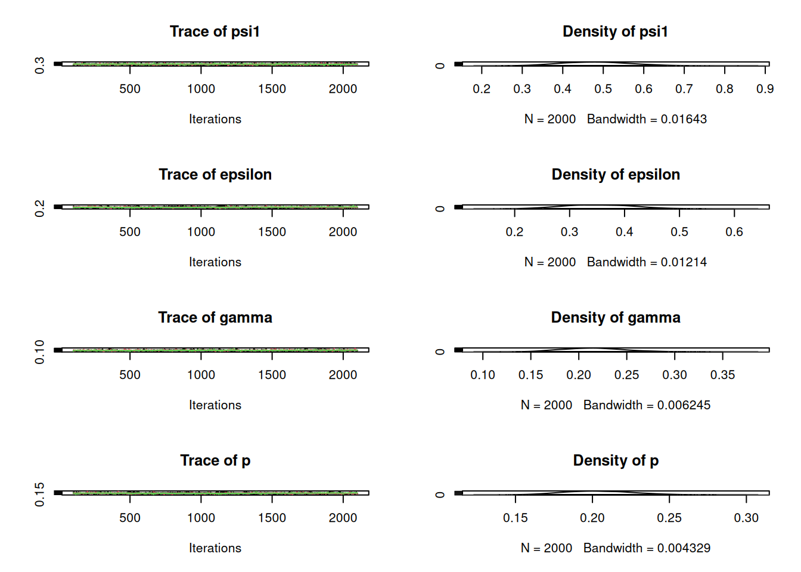
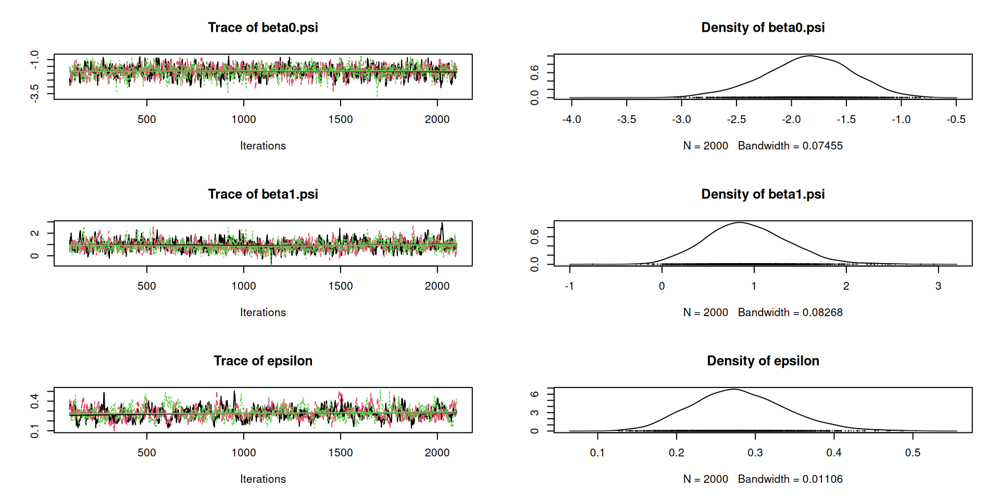
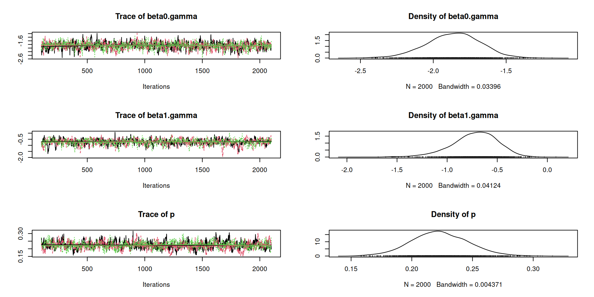
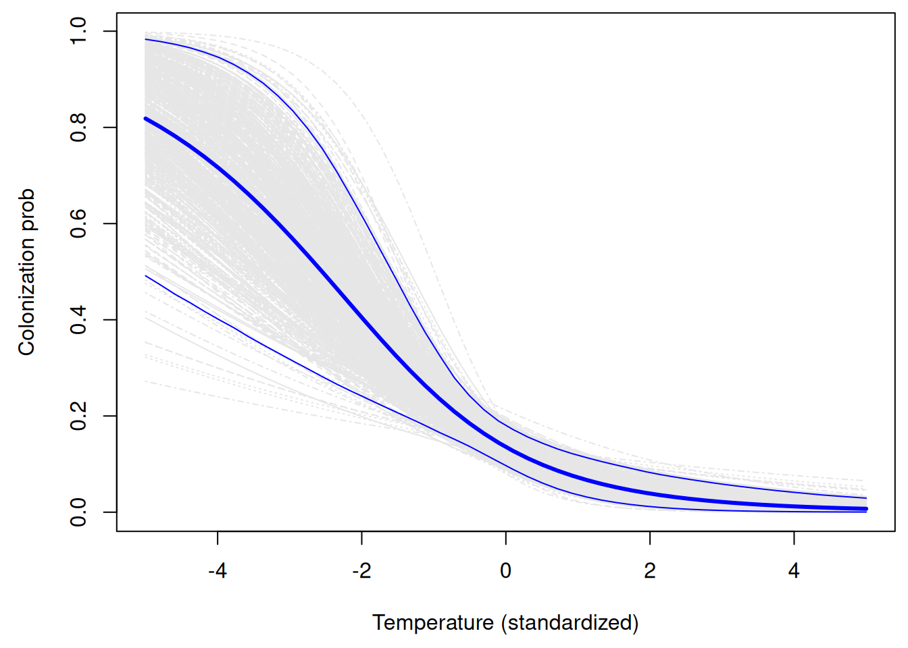

Dynamic occupancy models
WILD(FISH) 8390
Inference for Models of Fish and Wildlife Population Dynamics
When we covered static occupancy models, we focused exclusively on spatial variation.
Historically, the study of population dynamics was entirely focused on temporal variation.
Metapopulation models played a big role in emphasizing both spatial and temporal dynamics.
Dynamic occupancy models allow for inference on spatio-temporal occupancy resulting from local colonization and extinction processes.
The model for the state process is the same as logistic regression: \[ \mathrm{logit}(\psi_i) = \beta_0 + \beta_1 x_{i1} + \beta_2 x_{i2} + \cdots \\ z_i \sim \mathrm{Bern}(\psi_i) \]
Model for the observation process conditional on the state process:
\[ \mathrm{logit}(p_{ij}) = \alpha_0 + \alpha_1 x_{ij1} + \alpha_2 x_{ij2} + \cdots \\ y_{ij} \sim \mathrm{Bern}(z_i\times p_{ij}) \]
Definitions
\(\psi_i\) – probability that the species occurs at site \(i\)
\(z_i\) – binary presence/absence variable at site \(i\)
\(p_{ij}\) – probability of detecting the species at site \(i\) on occasion \(j\)
\(y_{ij}\) – binary detection/non-detection data
Initial occupancy state (same as static model), for \(k=1\). \[ z_{i,1} \sim \mathrm{Bern}(\psi_{i,1}) \]
Occupancy state dynamics, for \(k=2, \dots, K\). \[ \psi_{i,k} = z_{i,k-1}(1-\varepsilon) + (1-z_{i,k-1})\gamma \\ z_{i,k} \sim \mathrm{Bern}(\psi_{i,k}) \]
Observation model \[ y_{i,j,k} \sim \mathrm{Bern}(z_{i,k}\times p) \]
\(\psi_{i,k}\) – probability species occurs at site \(i\) during primary period \(k\)
\(z_{i,k}\) – binary presence/absence variable
\(\varepsilon\) – local extinction probability
\(\gamma\) – local colonization probability
\(p\) – probability of detecting the species if it’s present
\(y_{i,j,k}\) – detection data at site \(i\) on secondary period \(j\), primary period \(k\)
After the initial time period, the probability that a site is occupied depends on the previous state and the two probabilities:

These probabilities can depend on spatio-temporal covariates and random effects. In spatially-explicit models, they depend on the states and distances to neighboring sites.
Initial occupancy
Occupancy dynamics
Data
Observations
Notice the new argument numPrimary:
Notice the 4 distinct formulas
Call:
colext(psiformula = ~1, gammaformula = ~1, epsilonformula = ~1,
pformula = ~1, data = umf)
Initial (logit-scale):
Estimate SE z P(>|z|)
-0.113 0.367 -0.309 0.758
Colonization (logit-scale):
Estimate SE z P(>|z|)
-1.33 0.2 -6.66 2.7e-11
Extinction (logit-scale):
Estimate SE z P(>|z|)
-0.642 0.315 -2.04 0.0417
Detection (logit-scale):
Estimate SE z P(>|z|)
-1.36 0.146 -9.33 1.03e-20
AIC: 1626.912
Number of sites: 100re <- ranef(fm)
occupied.post <- predict(re, func=colSums, nsim=1000)
plot(1:nPrimary, rowMeans(occupied.post), type="b", pch=16,
xlab="Time", ylab="Sites occupied", ylim=c(0, 70))
lines(1:nPrimary, colSums(z), type="b", col=4)
segments(1:nPrimary, apply(occupied.post, 1, quantile, prob=0.025),
1:nPrimary, apply(occupied.post, 1, quantile, prob=0.975))
legend(1, 70, c("Actual", "Estimated"), pch=c(1,16), col=c(4,1), lty=1)
model {
psi1 ~ dunif(0, 1) ## initial occupancy
epsilon ~ dunif(0, 1) ## local extinction
gamma ~ dunif(0, 1) ## local colonization
p ~ dunif(0, 1) ## detection prob
for(i in 1:nSites) {
psi[i,1] <- psi1
z[i,1] ~ dbern(psi[i,1])
for(k in 2:K) {
psi[i,k] <- z[i,k-1]*(1-epsilon) + (1-z[i,k-1])*gamma
z[i,k] ~ dbern(psi[i,k])
}
for(k in 1:K) {
for(j in 1:J) {
y[i,j,k] ~ dbern(z[i,k]*p)
} } }
for(k in 1:K) {
N[k] <- sum(z[,k]) ## Sites occupied
}
}Put data in a named list
Initial values
Parameters to monitor
Iterations = 101:2100
Thinning interval = 1
Number of chains = 3
Sample size per chain = 2000
1. Empirical mean and standard deviation for each variable,
plus standard error of the mean:
Mean SD Naive SE Time-series SE
psi1 0.4837 0.08828 0.0011397 0.003077
epsilon 0.3526 0.06522 0.0008420 0.004007
gamma 0.2158 0.03444 0.0004446 0.001586
p 0.2041 0.02326 0.0003003 0.001325
2. Quantiles for each variable:
2.5% 25% 50% 75% 97.5%
psi1 0.3216 0.4204 0.4808 0.5419 0.6648
epsilon 0.2310 0.3062 0.3518 0.3977 0.4836
gamma 0.1550 0.1922 0.2143 0.2372 0.2893
p 0.1617 0.1877 0.2030 0.2196 0.2515
Three types of covariates:
siteCovs in ‘unmarked’yearlySiteCovs in ‘unmarked’obsCovs in ‘unmarked’Initial occupancy
Occupancy dynamics
epsilon2 <- 0.3 ## Local extinction prob
temperature <- matrix(rnorm(nSites*nPrimary)*elevation, ## Primary period covariate
nrow=nSites)
beta0.gamma <- -2; beta1.gamma <- -1
gamma2 <- plogis(beta0.gamma + beta1.gamma*temperature)
for(k in 2:nPrimary) {
psi2[,k] <- z2[,k-1]*(1-epsilon2) + (1-z2[,k-1])*gamma2[,k-1]
z2[,k] <- rbinom(n=nSites, size=1, prob=psi2[,k])
}Data
Notice the new arguments numPrimary and yearlySiteCovs:
unmarkedFrame Object
100 sites
Maximum number of observations per site: 30
Mean number of observations per site: 30
Number of primary survey periods: 10
Number of secondary survey periods: 3
Sites with at least one detection: 70
Tabulation of y observations:
0 1
2798 202
Site-level covariates:
elevation
Min. :-2.8755
1st Qu.:-0.7162
Median :-0.1279
Mean :-0.1097
3rd Qu.: 0.5059
Max. : 2.1723
Yearly-site-level covariates:
temp
Min. :-5.260423
1st Qu.:-0.335854
Median :-0.004001
Mean :-0.015024
3rd Qu.: 0.314745
Max. : 7.827805 Notice the 4 distinct formulas
Call:
colext(psiformula = ~elevation, gammaformula = ~temp, epsilonformula = ~1,
pformula = ~1, data = umf2)
Initial (logit-scale):
Estimate SE z P(>|z|)
(Intercept) -1.99 0.449 -4.43 9.27e-06
elevation 1.04 0.500 2.09 3.70e-02
Colonization (logit-scale):
Estimate SE z P(>|z|)
(Intercept) -1.90 0.185 -10.24 1.34e-24
temp -0.72 0.209 -3.44 5.88e-04
Extinction (logit-scale):
Estimate SE z P(>|z|)
-0.977 0.314 -3.11 0.00188
Detection (logit-scale):
Estimate SE z P(>|z|)
-1.25 0.139 -9.02 1.81e-19
AIC: 1351.396
Number of sites: 100Create data frame with prediction covariates.
Get predictions of \(\gamma\) for each row of prediction data.
model {
beta0.psi ~ dnorm(0, 0.5) ## Intercept of initial occupancy
beta1.psi ~ dnorm(0, 0.5) ## Effect of elevation
epsilon ~ dunif(0, 1) ## Local extinction
beta0.gamma ~ dnorm(0, 0.5) ## Intercept of colonization
beta1.gamma ~ dnorm(0, 0.5) ## Effect of temperature
p ~ dunif(0, 1) ## detection prob
for(i in 1:nSites) {
logit(psi[i,1]) <- beta0.psi + beta1.psi*elevation[i]
z[i,1] ~ dbern(psi[i,1])
for(k in 2:K) {
logit(gamma[i,k-1]) <- beta0.gamma + beta1.gamma*temp[i,k-1]
psi[i,k] <- z[i,k-1]*(1-epsilon) + (1-z[i,k-1])*gamma[i,k-1]
z[i,k] ~ dbern(psi[i,k])
}
for(k in 1:K) {
for(j in 1:J) {
y[i,j,k] ~ dbern(z[i,k]*p)
} } }
for(k in 1:K) {
N[k] <- sum(z[,k]) ## Sites occupied
}
}Put data in a named list
Initial values
Parameters to monitor
Iterations = 101:2100
Thinning interval = 1
Number of chains = 3
Sample size per chain = 2000
1. Empirical mean and standard deviation for each variable,
plus standard error of the mean:
Mean SD Naive SE Time-series SE
beta0.psi -1.8528 0.40464 0.0052239 0.013782
beta1.psi 0.9290 0.44821 0.0057864 0.015942
epsilon 0.2801 0.06036 0.0007792 0.003408
beta0.gamma -1.8652 0.18462 0.0023835 0.006602
beta1.gamma -0.7330 0.21694 0.0028007 0.008412
p 0.2203 0.02360 0.0003046 0.001141
2. Quantiles for each variable:
2.5% 25% 50% 75% 97.5%
beta0.psi -2.7135 -2.1099 -1.8352 -1.5730 -1.1064
beta1.psi 0.1114 0.6198 0.9011 1.2152 1.8717
epsilon 0.1726 0.2386 0.2767 0.3183 0.4073
beta0.gamma -2.2364 -1.9851 -1.8630 -1.7397 -1.5165
beta1.gamma -1.2117 -0.8657 -0.7172 -0.5853 -0.3558
p 0.1780 0.2037 0.2195 0.2355 0.2690

Extract posterior samples of \(N_t\) and compute summary stats.
Extract posterior samples of colonization coefficients, and then predict \(\gamma\) for each posterior draw.
beta.post <- as.matrix(jags.post.samples.covs[,c(
"beta0.gamma","beta1.gamma")])
temperature.seq <- seq(-5, 5, length=50)
n.samples <- nrow(beta.post)
gamma.post <- matrix(NA, n.samples, length(temperature.seq))
for(i in 1:n.samples) {
gamma.post[i,] <- plogis(beta.post[i,1] +
beta.post[i,2]*temperature.seq)
}
gamma.post.mean <- colMeans(gamma.post)
gamma.post.lower <- apply(gamma.post, 2, quantile, prob=0.025)
gamma.post.upper <- apply(gamma.post, 2, quantile, prob=0.975)matplot(temperature.seq, t(gamma.post[seq(1,n.samples,10),]), type="l",
xlab="Temperature (standardized)", ylab="Colonization prob", col=gray(0.9))
lines(temperature.seq, gamma.post.mean, lwd=3, col="blue")
lines(temperature.seq, gamma.post.lower, col="blue")
lines(temperature.seq, gamma.post.upper, col="blue")
Although we didn’t demonstrate, these models are great for creating dynamic species distribution maps.
The spatially-explicit versions are also great for modeling metapopulation dynamics and viability.
Most of the assumptions that we covered for the static models apply, except that we’ve relaxed the closure assumption.
Check out the new R package spOccupancy for a wide range of Bayesian occupancy models.